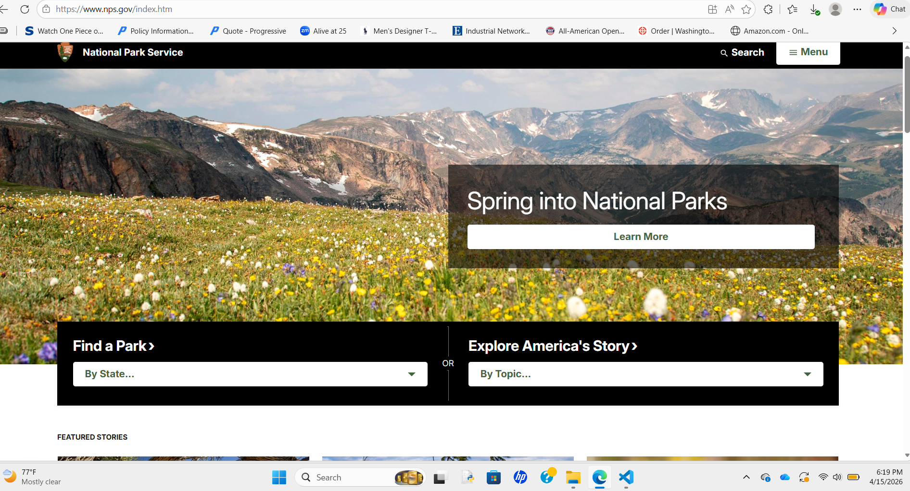

Website Information
URL of the website: https://www.nps.gov
Name of the website: U.S. National Park Service
The target audience is people like travelers, families, students, and anyone who wants to learn more about national parks, history, and nature.
Screenshot of the Website

How the Site Is Organized
The website is organized into main sections like Plan Your Visit, Learn and Explore, and Get Involved. It also has a menu, links, and a search bar that help you move around the site. This makes it easier to find information about different parks.
CRAP Design Principles
Contrast
The site uses good contrast between the text and background, which makes it easier to read.
Repetition
The same colors, fonts, and layout are used across different pages, which makes the site feel consistent.
Alignment
Everything is lined up in a clean way, which makes the page look more organized.
Proximity
Related content is grouped together, which helps users understand what information goes together.
One clear example is repetition because the site keeps the same layout, colors, and navigation style across pages.
Accessibility Audit Score
I used the Lighthouse Accessibility Checker in Chrome DevTools to test the homepage.
Accessibility Score: 71 / 100
Effectiveness
The site is effective because it gives clear information like finding parks, planning visits, and learning about different places. Most tasks can be done correctly because the information is detailed and the navigation is easy to follow.
Efficiency
The site is pretty efficient because you can use the menu and search to find things quickly. But some pages have a lot of information, so it can take a little longer to find exactly what you're looking for.
Engagement
The site is nice to use because it has good visuals and is organized well. It fits the topic since it looks professional and informative for a government website.
Recommendation
One thing that could be improved is making some pages less crowded. If there was less information all at once, it would be easier for users to find what they need faster.
Overall Evaluation
Overall, I think the U.S. National Park Service website is a good informational site. It is organized well and has a consistent design with a lot of helpful information. Even though some pages feel a little busy, it is still easy to use and useful.